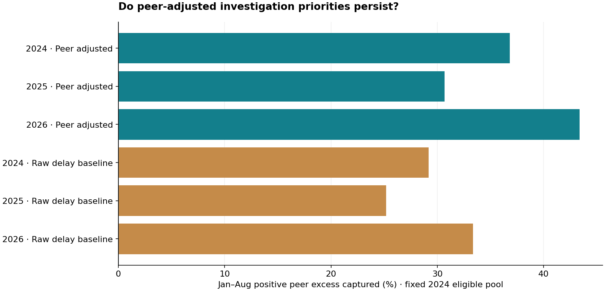

A fixed ten-slot investigation screen captures 43.4% of eligible positive peer excess in Jan–Aug 2026; the raw-burden baseline captures 33.3%. Retrospective stability gate: PASS; prospective deployment gate: NOT MET.
Investigate before intervening. Peer excess measures an accounting gap, not avoidable minutes or measured savings.

| policy | year | slots_observed | positive_excess_capture_pct | signed_excess_minutes |
|---|---|---|---|---|
| peer_adjusted | 2024 | 10 | 36.82 | 1,555,301.88 |
| peer_adjusted | 2025 | 10 | 30.67 | 1,148,830.03 |
| peer_adjusted | 2026 | 10 | 43.38 | 1,616,427.30 |
| raw_burden_baseline | 2024 | 10 | 29.19 | 1,119,398.06 |
| raw_burden_baseline | 2025 | 10 | 25.19 | 676,576.50 |
| raw_burden_baseline | 2026 | 10 | 33.34 | 867,300.21 |
| rank | carrier | airport | diagnostic_months | diagnostic_excess_minutes | status |
|---|---|---|---|---|---|
| 1 | AA | CLT | 8 | 126,228.85 | needs_operational_review |
| 2 | AA | DFW | 8 | 309,821.31 | needs_operational_review |
| 3 | AA | PHX | 8 | 128,433.57 | needs_operational_review |
| 4 | OO | DTW | 8 | 218,906.10 | needs_operational_review |
| 5 | AA | MIA | 8 | 98,917.07 | needs_operational_review |
| 6 | OO | ORD | 8 | 336,396.22 | needs_operational_review |
| 7 | OO | DEN | 8 | 170,089.13 | needs_operational_review |
| 8 | AA | PHL | 8 | 62,274.03 | needs_operational_review |
| 9 | OO | MSP | 8 | 130,012.77 | needs_operational_review |
| 10 | B6 | JFK | 8 | 35,348.24 | needs_operational_review |
60,093 original rows; 148 quarantined. Source export: Jan 2024–Aug 2026. Leave-one-out peers need three other carriers and 1,000 other-carrier flights. Candidate universe and shortlist fixed from 2024. Exploratory block interval: 5.94 to 13.07 percentage points.
No flight-level schedule controls, passenger counts, causal intervention data or historical release vintages. Review both strict and permissive reconciliation sensitivities.
Executive memo · Shortlist CSV · Source lineage and peers · Quarantine register · Hypothetical pilot economics